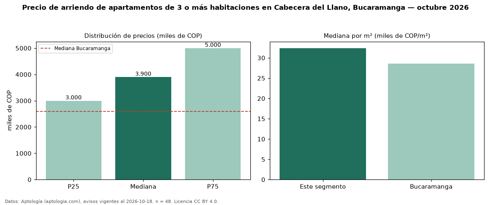

Precio de arriendo de apartamentos de 3 o más habitaciones en Cabecera del Llano, Bucaramanga — octubre 2026
COP 3,90 millones al mes es el canon mediano de apartamentos de 3 o más habitaciones en arriendo en Cabecera del Llano, Bucaramanga (n = 48 avisos). Eso es 50 % por encima de la mediana de Bucaramanga para apartamentos de 3 o más habitaciones (COP 2,60 millones). Por metro cuadrado, la mediana es COP 32.391/m² al mes (n = 48 avisos con área), 13 % por encima de Bucaramanga (COP 28.571/m²). Son 73 % de los 66 avisos de apartamentos en arriendo de la zona, cuya mediana general es COP 3,58 millones (+9 %). Con el precio por m² de venta del mismo segmento (COP 5,13 millones/m²), la rentabilidad bruta implícita es 7,6 % anual (aproximación con medianas de ofertas distintas). El área mediana anunciada es 118 m². La administración mediana declarada es COP 701.000 al mes (n = 38), aparte del canon. El estrato más frecuente es 6 (81 % de los avisos con estrato). Datos: Aptología (aptologia.com), CC BY 4.0 — https://www.aptologia.com/arriendo/bucaramanga/cabecera-del-llano. Archivos: PDF, CSV con las cifras y gráfica PNG.

| Avisos únicos | 48 |
|---|---|
| Percentil 25 | COP 3.000.000 |
| Mediana | COP 3.900.000 |
| Percentil 75 | COP 5.000.000 |
| Mediana por m² | COP 32.390 |
Fuente: avisos vigentes de portales inmobiliarios recopilados por Aptología, deduplicados (mínimo 30 avisos únicos por celda). Precios pedidos, no cerrados. Fecha: 2026-10-18.